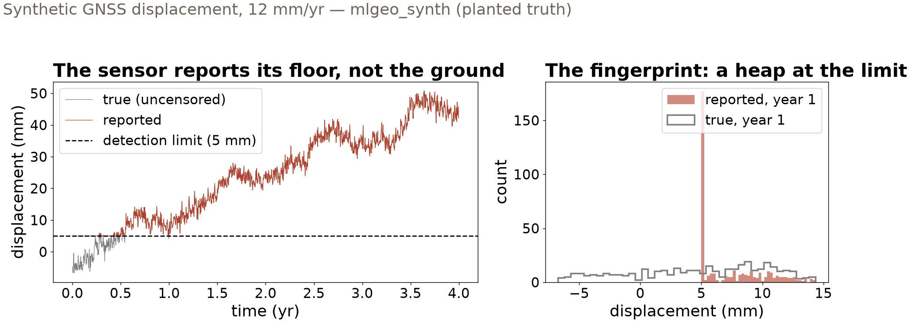

Session 5 · Fri Oct 9 · Book sections 2.3–2.4
🧮
Cleaning changes your data before any model ever sees it.
Which of your table’s oddities are damage — and which are the science?
Reading: 2.3 Pandas · 2.4 DataFrame preparation
📖 The playbook: whether missing data can be ignored depends on why they are missing — the origin of MCAR / MAR / MNAR.
Rubin, D. B. (1976). Inference and missing data. Biometrika, 63, 581–592.
✗ A spreadsheet’s excluded rows propped up a global austerity argument — reanalysis of the same table reversed the headline result.
Herndon, T., Ash, M., & Pollin, R. (2014). Does high public debt consistently stifle economic growth? A critique of Reinhart and Rogoff. Cambridge Journal of Economics, 38, 257–279.
✓ Doing it right: substituting values at the detection limit fabricates data — model the censoring instead.
Helsel, D. R. (2006). Fabricating data: How substituting values for nondetects can ruin results, and what can be done about it. Chemosphere, 65, 2434–2439.
Rows dropped from a table have moved national policy. Cleaning decisions are scientific claims.
Learn the verbs, not the spellings — your coding agent knows the syntax; you must know what to ask for.
10,000 rock samples — 7 major-element oxides, density, magnetic susceptibility, lithology
985 andesites — against 5,525 granites: a 5.6 : 1 class imbalance
Synthetic whole-rock geochemistry (mlgeo_synth): the generator plants the correlations and the pathologies, so every cleaning decision is graded against known truth.
Imbalance is the norm in geoscience labels — remember 985 when a classifier reports 90% accuracy in Chapter 3.
| Column | Zeros in the table | Verdict |
|---|---|---|
| MgO | 1,434 | real — evolved granites have fractionated their magnesium away |
| K2O | 824 | real — same logic, other rock types |
| density | 15 | impossible — no rock has zero density: an instrument’s failure code |
The check: is zero inside the physically possible range of this variable?
“Replace all zeros with missing” would delete 1,432 silica-rich granites — rewriting the geology, not cleaning it.

12% of samples sit exactly at the 5 mm floor — yet a missing-data check reports zero problems. Censored data passes every missingness test.
12.44 mm/yr trend fit on the true, uncensored values
11.59 mm/yr trend fit on what the sensor reported
Every low excursion pulled up to the floor: the early mean is too high, the fitted trend too low — biased in a predictable direction. Dropping the censored samples deletes exactly the low values: worse.
Model the censoring, or report the limit in the data card — never substitute and move on.
Missing completely at random (MCAR) — safe to drop. Missing because of the value (MNAR) — dropping deletes your extremes.
Ask what process made the gap. If the answer involves the measurement, the missingness belongs in your data card as data.
A column can be numeric in content and non-numeric in dtype. Check dtypes after every cleaning step, not just the first.
| Pathology | Fingerprint | Geoscience example | Response |
|---|---|---|---|
| Sentinel value | heap at an impossible value | density = 0 g/cm³ | replace only the impossible ones |
| Censored value | heap at a plausible round value | 5 mm detection floor | model it, or report the limit |
| Informative gap | gaps track events | gauge drowned in the flood | treat the gap as data |
| Dtype drift | numeric content, non-numeric dtype | density after cleaning | check dtypes every step |
Same discipline throughout: diagnose the mechanism first; clean second; write the decision down.
pixi run jupyter lab → 2.4_dataframes_prep.ipynbMonday: sampling, resampling & irregular data (2.5–2.6) · HW1 due Mon Oct 12
ESS 469/569 · Machine Learning in the Geosciences · Autumn 2026